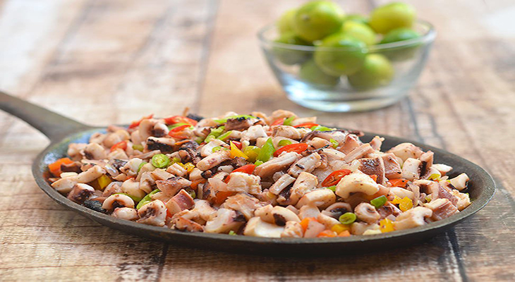
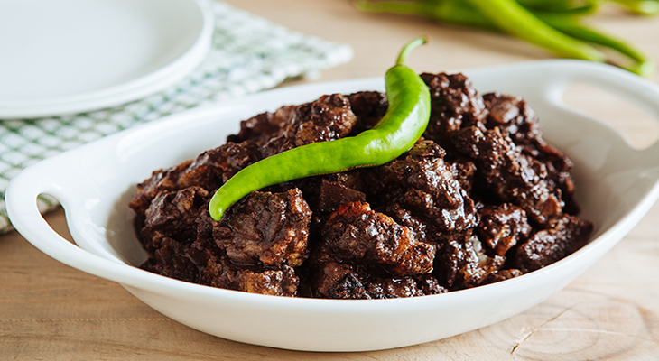
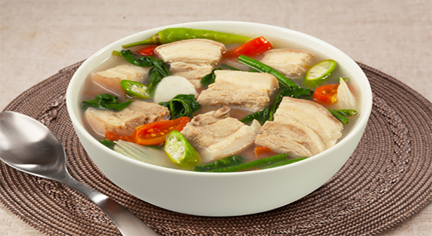
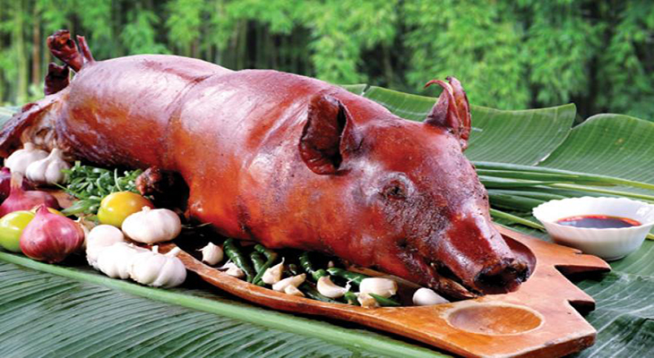
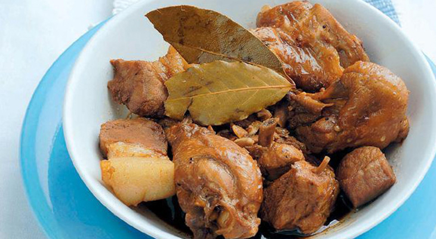

Mouth Drooling Filipino Dishes Anybody Should at least Try
Posted on March 12, 2018 at 12:00 PM
Filipino dishes has been delighting taste buds for centuries with its phenomenal and exotic flavors. Being a Filipino I’ll say and defend that we have the best tasting and the most versatile dishes among other cultures; we’ll definitely fight anybody that’ll say otherwise. Dishes in the Philippines reflect our country’s multi-cultural influence. From the mouth drooling Lechon to perfectly marinated Adobos you can definitely find Chinese, Spanish, or Native influence which is innovated in almost every dish. This list is quite personal for us, for we have tasted, loved and treasured these magnificent dishes. We think everyone should at least try these 5 Filipino dishes.
1. Sisig
Starting the list with the all-time Filipino favorite, our first entry is the infamous SISIG. It is the perfect representation of the country’s resourcefulness and inventiveness. The culinary capital of Pampanga turned the pork's cheeks, head and liver into a sizzling, delicious dish. This widely loved and adopted recipe served mainly just an appetizer before which then evolved over the years into a popular dinner entrée. Sisig is known for its strong flavor, it is the perfect blend of tangy and spicy, which I guarantee anybody could love.
2. Dinuguan
With Dinuguan black is beauty and tasty indeed. In Philippines we do not judge food by its appearance and Dinuguan certainly do not look that good or appetizing. But, what it lacks in appearance, it makes up in its exquisite and exceptional taste. This black dish is made with pork and pig innards stewed in fresh pig blood seasoned with garlic, onion and oregano. Love or hate it, it is definitely one of our legendary and respected dishes of all time.
3. Sinigang
Entering our 3rd entry is the Filipinos most beloved soup. Sinigang has always been our favorite and has been passed through generations. It is served hot, sour and savory, and usually accompanied with rice. Sinigang is a stew of fish, prawns, pork or beef soured by fruits like tamarind, kamias or even tomatoes. This quintessential Filipino dish is an all-time favorite of Filipinos; and will surely touch the heart of any foodie.
4. Lechon
No celebration would be complete without the infamous Lechon in the table. It easily is the most popular and exquisite dish that could be served in any Filipino occasion. It is literally an entire pig roasted over charcoal, resulting into gorgeous looking, golden-brown skinned Lechon. Crispy and delicious, Lechon will always be the most invited party guest among any Filipino occasions. Whew! our mouths are already drooling.
5. Adobo
When in Philippines it is rather impossible to miss Adobo. It is the most popular ubiquitous dish in every household in the Philippines for all the good reasons. This marinated dish is known and loved by every Filipinos for its strong, delicious and familiar flavor. Every Filipino family has mastered its cooking process. Traditional adobo involves meat, seafood, or vegetables marinated in vinegar, soy sauce, garlic, and black peppercorns, which is browned in oil, and simmered in the marinade. Just simply delicious! You can expect that every household in the Philippines has Adobo on their menu.
Categories
Recommended

Delicious and Artistic dishes anybody should try in Japan
by Erickson Javier

5 Heavenly Thailand Cuisines that will Change your life
by Shann Kirby Locsin

5 Tangy and Savory Vietnam Foods You Need to Try
by Shann Kirby Locsin